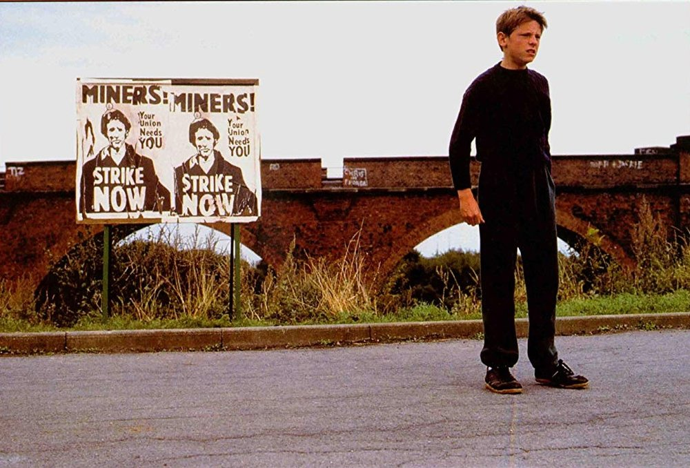
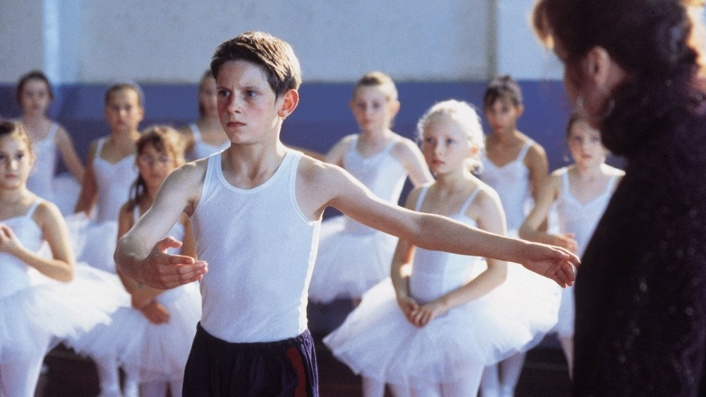
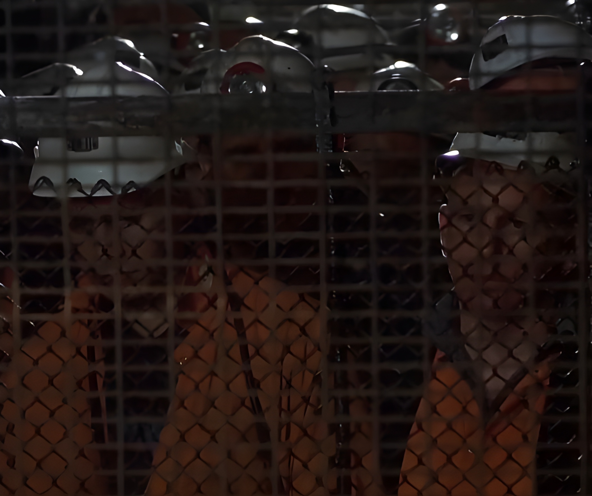
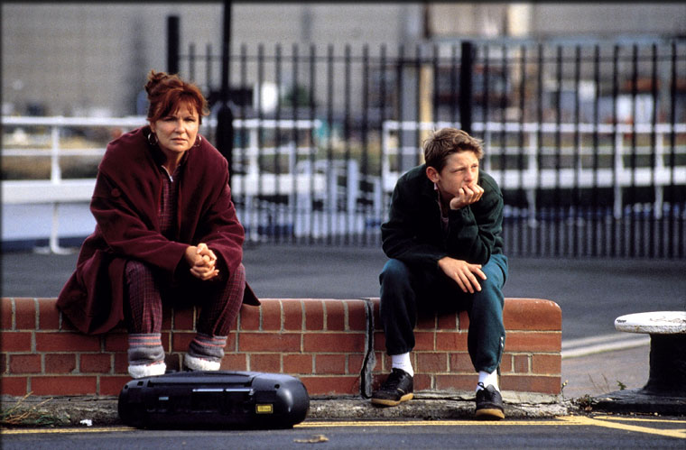
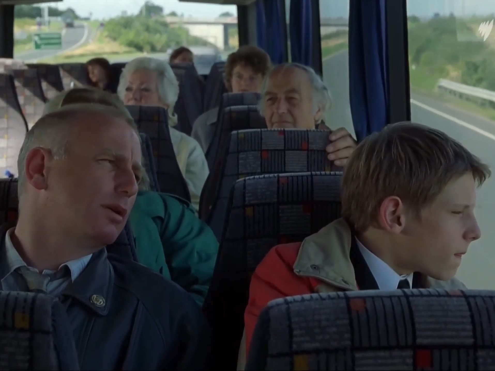
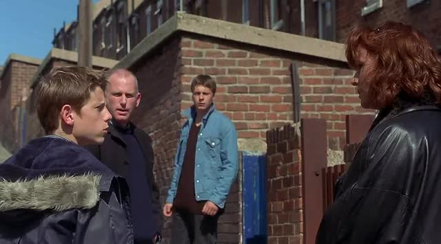
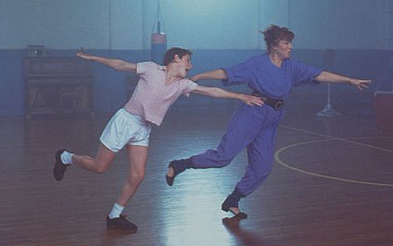
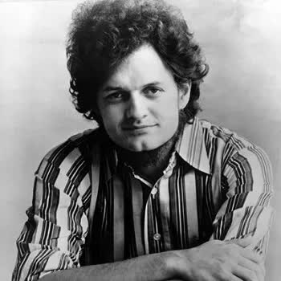

The lives and cultures of others, including the intergenerationality of cultural human experiences are described in depth in the two texts. In the movie, Billy Elliot, Tony and Jackie, are described to have very similar lives, with the same expectation being pushed on Billy. The importance of work and localisation in the culture described in Billy Elliot is further emphasised. Similar intergenerational expectations exist in urbanised cultures, such as that described in the song, Cats In The Cradle.
In the movie, Billy Elliot, Tony and Jackie, are described to have very similar lives, with the same expectation being pushed on Billy. Within the text, the lives of Tony and Jackie are shown to various extents, with a substantial amount of emphasis being placed on the expectation that Billy lives a similar life to his father and older brother, under this same culture. The movie, Billy Elliot is set in a northern English Coal mining town, where nearly all men work in coal mines, and have grown up participating in boxing, as evident through the emphasis on traditions related to boxing gloves. When Billy fails to box adequately he is told by his coach that he is “a disgrace to them gloves, your father, and the traditions of this boxing hall”.
25 minutes into the movie, Billy’s father, Jackie, finds Billy in a Ballet Lesson, after he leaves home quickly. A close up shot of Jackie’s face emphasising a combination of disbelief, and anger. This is followed by dialogue further emphasising this anger, consisting of him shouting “You, Out! Now!”, to Billy. A conversation in the later scene ensues, where Jackie describes his motivation for taking Billy out of the lesson, explaining through continued dialogue, that Ballet is only perfectly normal “For girls, not for lads, Billy.”, continuing with “Lads do football, or boxing, or wrestling.”
The expectation that Billy should do boxing rather than Ballet, like his father, brother, and other men further along his family tree is pushed on him throughout the scene. This is an extension of his father’s motivation to keep his family very similar, such that it lacks intergenerational differences. The human experience of the necessity to participate in boxing for lower-middle class boys in the mining town is emphasised extensively throughout the above 3 scenes, and the majority of the movie.
The importance of work and localisation in the culture described in Billy Elliot is further emphasised. As an extension of the previous paragraph, Billy is said to be expected to be a miner once he is of the appropriate age. In the movie, Billy Elliot, after continued attempts from Billy and Mrs Wilkinson, Billy’s father, Jackie, is convinced is capable enough of ballet that he should attempt the Royal Ballet School selection exam in London.
Whilst travelling to London on a bus, Jackie and Billy converse about the city, at which point Billy and the audience discovers that Jackie has never gone to London, which he justifies by stating “Well, there’s no mines in London.” The obsession with isolationist work culture in lower class workers proves as further evidence for the viewed necessity for a child to participate in the same work as his father.
The father, like many others living in similar conditions are simply unable to comprehend the existence of another career option and life, essentially meaning he perhaps intended to prevent his son from moving to the Royal Ballet School, as a way to ensure his future livelihood. This emphasis is clearly shown with the conditions under which Tony, Jackie’s eldest son lives, which is very similar to that of his father, that is he is a miner, currently participating in the miners strike.
The localisation, to the extent it may even be considered a form of isolationism, of work and culture in small rural towns such as that in Billy Elliot place emphasis on living in unchanging conditions when considering generational differences (or lack thereof).
Similar intergenerational expectations exist in urbanised cultures, such as that described in the song, Cats In The Cradle, by Harry Chapin, where once the father doesn’t work such that he has time to spend with his son, his son is unavailable due work.
Throughout, the phrase "When you coming home, dad?" "I don't know when", as used in the lyrics, which later becomes "When you coming home, son?" "I don't know when", partial repetition in dialogue emphasises the lack of intergenerational changes between a father and son, where both have little time to spend together through various points in their lives. In the third stanza, the son, although being unable to spend adequate time with his father, continues to aspire to become like his father stating that “I'm gonna be like him, yeah. You know I'm gonna be like him.”
This statement, once accounting for both the father’s and the son’s longing for time freedom, can be described as fairly oxymoronic. Where one, in the traditional practices of work, cannot exist with the other, one must choose between either making a living, or having time freedom.
The storytelling aspects of the song is concluded, in a sense, with a statement from the first-person perspective of the father explaining that “And as I hung up the phone, it occurred to me. He'd grown up just like me. My boy was just like me”, after a conversation with his now adult son, where he explains he no longer has time to spend with his father, now that his father has time to spend with him.
Here, the first person perspective specifically emphasises the extent of the cultural expectation that children live similar lives to their parents, even if they despise some aspects of this life, and knowingly attempt to avoid it. Various techniques such as the first-person perspective described above, usually used in prose fiction, are capable of adding true storytelling elements to a set of song lyrics, in order to effectively develop an important aspect of a life, and an extension of which, as a culture, with time context.
Throughout various texts, including the two above, storytelling manifests in various ways in order to develop insight into the lives and cultures of others. Both texts contain emphasis on enforcing a lack of intergenerational differences, especially between a father, and his son.
These similarities often act as an aspect of a culture, such as the urbanised middle class in Cats In The Cradle, or lower class cultures in rural English towns. The human experience of being a part of a culture such as those described, is developed through the two texts with the use of storytelling elements to give a sense of time progression in the case of the song, and an in depth description of differences, even in such a small community, in Billy Elliot.








Label